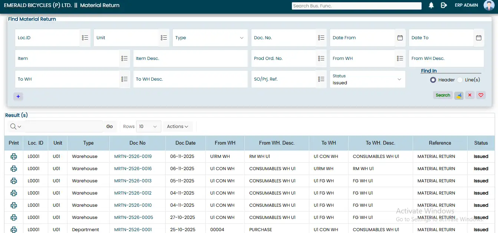
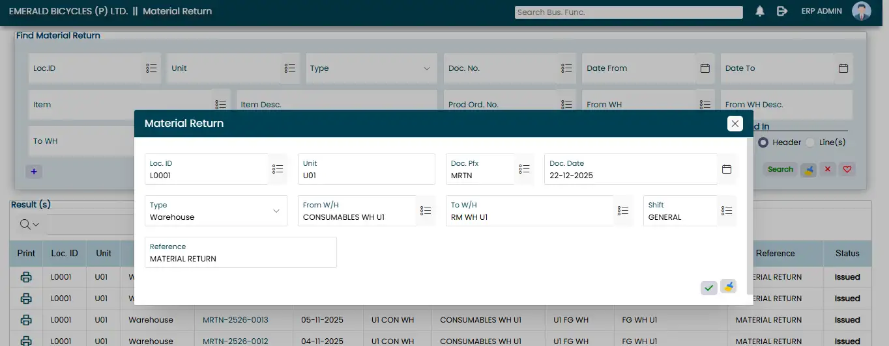
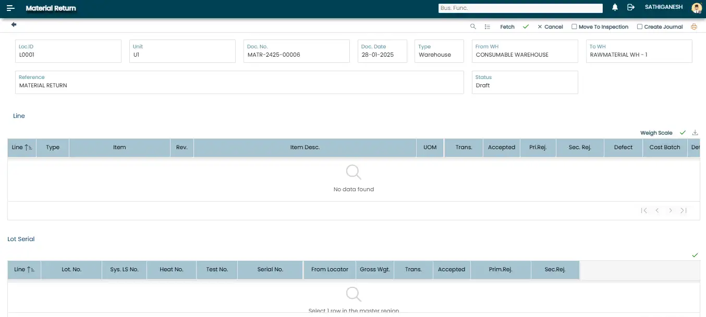
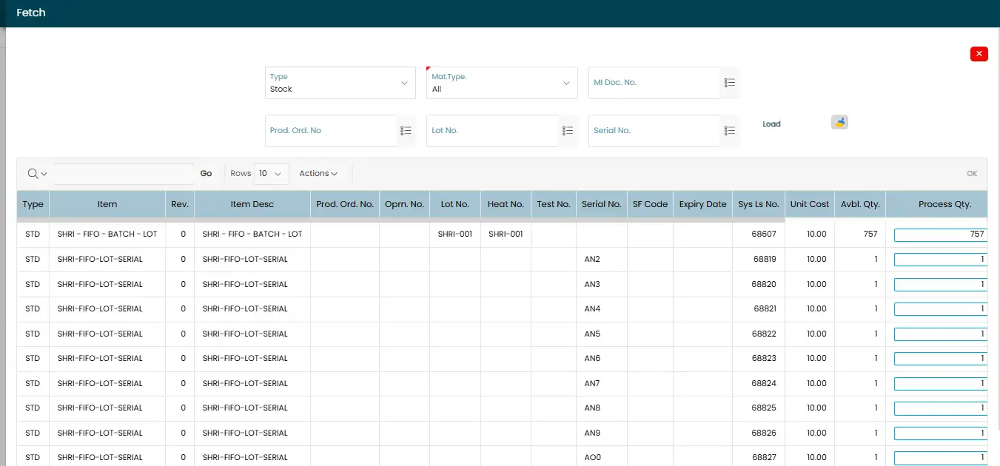
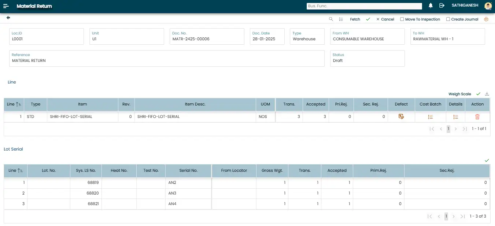
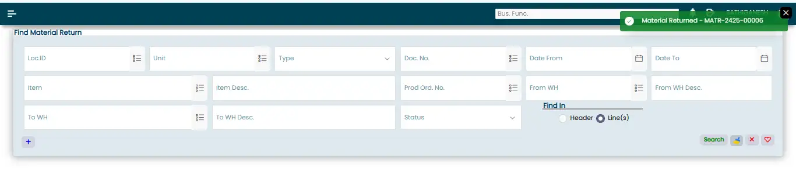
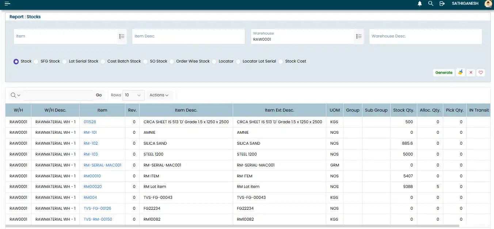
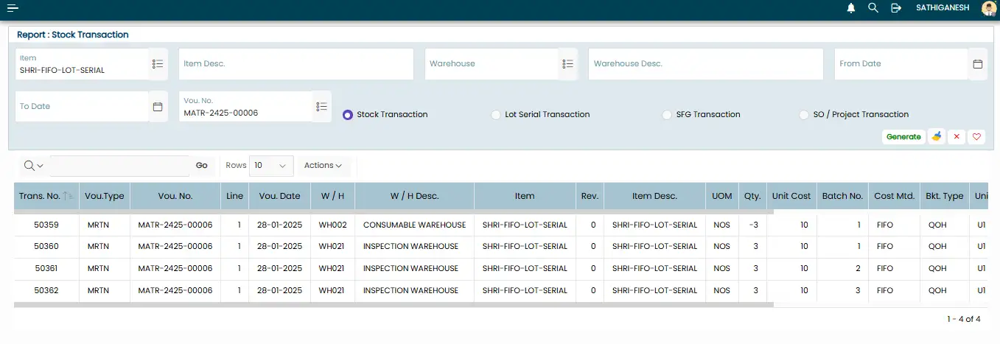

<div data-category="Inventory Control" data-title="Material Return" data-updated="January 27, 2026" data-contributors="RoadmapIT" data-breadcrumb="Home,Inventory Control,Material Return">
  <div class="page-content">
    <p>The issued material can be returned from the source of the same unit or other units by using the Material return screen. The Item can be of standard or Semi-finished goods.</p>
    <h5>Navigation path:</h5>
    <p class="fs-6">Supply Chain Management \ Inventory \ Transaction \ Material Return</p>
    
    <ul style="list-style-type: none; align-content: center">
      <li class="mouse-icon">Search screen displays the list of Material Return with the relevant details and its status</li>
      <li class="mouse-icon">User can filter the respective documents by entering the search parameters at the header.</li>
      <li class="mouse-icon">On clicking search button, system displays the results relevant to the search parameters entered.</li>
      <li class="mouse-icon">
        Using
        
        icon, entered search parameters can be cleared.
      </li>
      <li class="mouse-icon">
        To close the screen, use
        <i class="bi bi-x fs-4 mx-2 text-danger"></i>
        icon.
      </li>
      <li class="mouse-icon">
        Click
        <i class="bi bi-plus fs-4 mx-2 text-primary"></i>
        button to create new Material Return by entering all the mandatory fields displayed in the Add dialog
      </li>
    </ul>
    
    <ul style="list-style-type: none; align-content: center">
      <li class="mouse-icon">Default Unit Loc. & Unit is auto populated</li>
      <li class="mouse-icon">Select the Type.</li>
      <li class="mouse-icon">Enter From W/H.</li>
      <li class="mouse-icon">Select To W/H.</li>
      <li class="mouse-icon">Sys date is auto populated with Doc Date.</li>
      <li class="mouse-icon">Enter the Reference details.</li>
      <li class="mouse-icon">
        Click
        <i class="bi bi-check-lg fs-4 mx-1 text-success"></i>
        button to create the material return document
      </li>
    </ul>
    
    <ul style="list-style-type: none; align-content: center">
      <li class="mouse-icon">Click on Fetch button to fetch the material issuance lines to be returned</li>
    </ul>
    
    <ul style="list-style-type: none; align-content: center">
      <li class="mouse-icon">Select the material issuance lines and click OK button to add the lines for return</li>
    </ul>
    
    <ul style="list-style-type: none; align-content: center">
      <li class="mouse-icon">Enter the Accepted Qty, Prim. Rej. Qty is calculated updated based on the accepted qty entered</li>
      <li class="mouse-icon">If inspection is to be done for the item, Accepted Qty is not editable</li>
      <li class="mouse-icon">Lot/Serial displays the Lot serial No. and Locator details</li>
      <li class="mouse-icon">Now click on Move to Inspection flag</li>
    </ul>
    
    <ul style="list-style-type: none; align-content: center">
      <li class="mouse-icon">Materials are returned to the Warehouse specified in the To W/H.</li>
    </ul>
    
    <ul style="list-style-type: none; align-content: center">
      <li class="mouse-icon">Check for the stock qty levels In the respective warehouses in the Stocks screen</li>
    </ul>
    
    <ul style="list-style-type: none; align-content: center">
      <li class="mouse-icon">Check for the stock transactions of Material Return process</li>
    </ul>
  </div>
</div>
